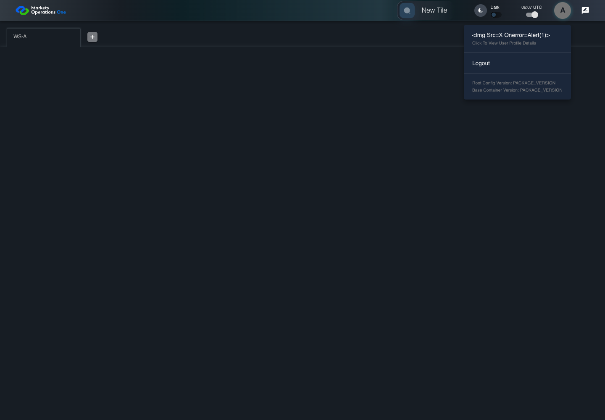
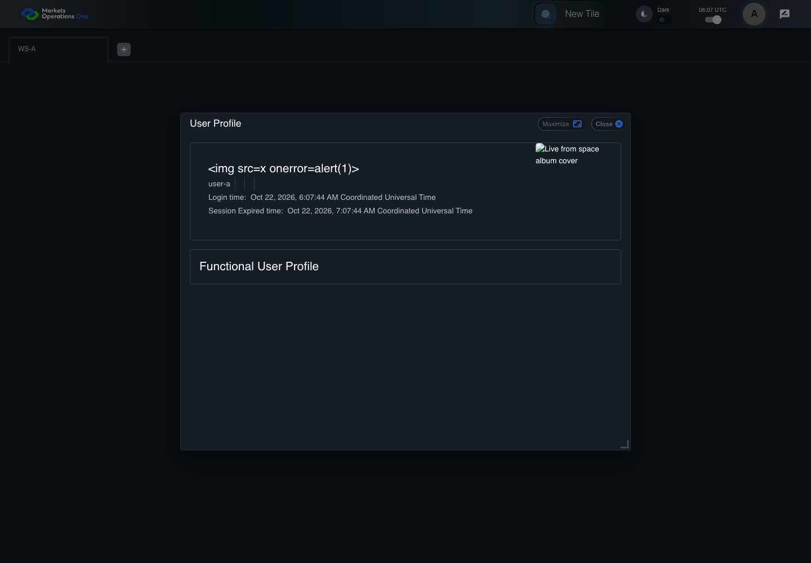
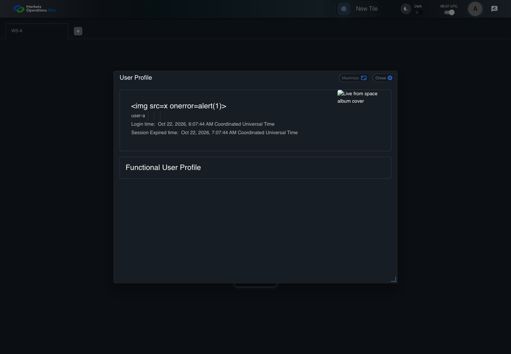

AUTH-040 profile preserves directory text
PASS · application/run-050/auth-040-profile-preserves-directory-text-ccaf5f638ac8-attempt-1 · ACTUAL_APPLICATION_LOCAL_SERVICES
Actual React; controlled callback/login responses; unsigned browser-only credentials; empty seeded WS-A. Provider acceptance and BFF fallback are not verified.
2026-10-22T06:07:42.878Z to 2026-10-22T06:07:46.792Z
Assertions and result · Artifact manifest · Exact run inputs and source hashes
Result SHA-256:03b52757985aed9d0fad760ea1f08fc9d3754e15733e7ecaab00949a7b188109Machine observations
- directory-response-fixture.json
3514a24cf4cb68fd98585ab86cbb400dcbae1f9caca2e098e901321ba6b9156d - profile-assertions.json
163d41bab4cefaf667c3c8d94280a24d1a3e30e94684a8b9aab622e1b92bc512
Screenshot capture: CAPTURED. Named frames: 11.
Step screenshot bindings: COMPLETE. 10/10 canonical steps have execution screenshots.
Bindings measure structural coverage only. They do not establish screenshot content quality or relevance.
Screenshot content review: NOT_REVIEWED. Recorded context: 0/11 frames. Identical image bytes: 2 repeated frames. Recorded context does not establish human visual review.
Canonical step timeline
Given User A is an entitled fixture user in an isolated browser context with empty browser storage
Execution: PASSED.
1. step-01 Visible state after step 1: Given User A is an entitled fixture user in an isolated browser context with empty browser storage
2026-10-22T06:07:43.834Z · 1440×1000
Step: /Users/lushevol/code/github/ratan-release-impact/workbench/tasks/ui-test-coverage-20261022/test-cases.md:1570
SHA-256:f6681a39e8f7702be9d0264aceecd72753062b0cc58016f7484f14e228d1cd35And the LOCAL login page is visible; the credential service accepts user-a / FixturePass1!; login returns oud.fullName="<img src=x onerror=alert(1)>"
Execution: PASSED.
2. step-02 Visible state after step 2: And the LOCAL login page is visible; the credential service accepts user-a / FixturePass1!; login returns oud.fullName="<img src=x onerror=alert(1)>"
2026-10-22T06:07:44.070Z · 1440×1000
Step: /Users/lushevol/code/github/ratan-release-impact/workbench/tasks/ui-test-coverage-20261022/test-cases.md:1571
SHA-256:664babd84ff6d7926ad8e99d7a4bbde727c1a202e01dd31a587c9d3836eefb38When User A enters "user-a" into the textbox with placeholder "Enter Username" on the login page
Execution: PASSED.
3. step-03 Visible state after step 3: When User A enters "user-a" into the textbox with placeholder "Enter Username" on the login page
2026-10-22T06:07:44.357Z · 1440×1000
Step: /Users/lushevol/code/github/ratan-release-impact/workbench/tasks/ui-test-coverage-20261022/test-cases.md:1572
SHA-256:ef27de9dae5b857aa7028ff3b8e4dbc09734687b02ca43a5e85a6d80e2774d08And User A enters "FixturePass1!" into the text input with placeholder "Enter Password" on the login page
Execution: PASSED.
4. step-04 Visible state after step 4: And User A enters "FixturePass1!" into the text input with placeholder "Enter Password" on the login page
2026-10-22T06:07:44.648Z · 1440×1000
Step: /Users/lushevol/code/github/ratan-release-impact/workbench/tasks/ui-test-coverage-20261022/test-cases.md:1573
SHA-256:a95c65ca56c073467578ce17791e68d1a172bbb8fca78688af2ee4dba65b174fAnd User A clicks the button labelled "Sign In" on the login page
Execution: PASSED.
5. step-05 Visible state after step 5: And User A clicks the button labelled "Sign In" on the login page
2026-10-22T06:07:44.981Z · 1440×1000
Step: /Users/lushevol/code/github/ratan-release-impact/workbench/tasks/ui-test-coverage-20261022/test-cases.md:1574
SHA-256:4d745c8f55188763e94851fe67201b5f19083469ba6fca575040044b0679afb0And User A clicks the icon button with test ID "${MFE_APP_PREFIX_STYLE}_avatar_IconButton" in the portal header on the Home page
Execution: PASSED.
6. step-06 Visible state after step 6: And User A clicks the icon button with test ID "${MFE_APP_PREFIX_STYLE}_avatar_IconButton" in the portal header on the Home page
2026-10-22T06:07:45.168Z · 1440×1000
Step: /Users/lushevol/code/github/ratan-release-impact/workbench/tasks/ui-test-coverage-20261022/test-cases.md:1575
SHA-256:198b4022c69e8296135ebde000c66206c6dbf536bb0b2eea5ec8620877b6c026And User A clicks the menu item containing "<img src=x onerror=alert(1)>" inside the menu with DOM ID "menu-appbar-avatar"
Execution: PASSED.
7. step-07 Visible state after step 7: And User A clicks the menu item containing "<img src=x onerror=alert(1)>" inside the menu with DOM ID "menu-appbar-avatar"
2026-10-22T06:07:45.402Z · 1440×1000
Step: /Users/lushevol/code/github/ratan-release-impact/workbench/tasks/ui-test-coverage-20261022/test-cases.md:1576
SHA-256:810f4eaf025313ae8af44b91844f5127a791b2da82072109fcd6be822cbeca2fThen the text "<img src=x onerror=alert(1)>" is visible inside the dialog titled "User Profile" on the Home page
Execution: PASSED.
8. step-08 Visible state after step 8: Then the text "<img src=x onerror=alert(1)>" is visible inside the dialog titled "User Profile" on the Home page
2026-10-22T06:07:45.486Z · 1440×1000
Step: /Users/lushevol/code/github/ratan-release-impact/workbench/tasks/ui-test-coverage-20261022/test-cases.md:1577
SHA-256:810f4eaf025313ae8af44b91844f5127a791b2da82072109fcd6be822cbeca2fImage bytes match frame 7. An unchanged image can be valid for consecutive assertions. This match does not establish correct step content.
And the browser records zero alert calls from the directory-name fixture
Execution: PASSED.
9. step-09 Visible state after step 9: And the browser records zero alert calls from the directory-name fixture
2026-10-22T06:07:45.550Z · 1440×1000
Step: /Users/lushevol/code/github/ratan-release-impact/workbench/tasks/ui-test-coverage-20261022/test-cases.md:1578
SHA-256:0346d7f9be7ef17e30f2af478d2874100ac49d2b2530c6b9bc6f09a2c6d67689And the dialog titled "User Profile" on the Home page contains no img element created from the directory-name markup
Execution: PASSED.
10. step-10 Visible state after step 10: And the dialog titled "User Profile" on the Home page contains no img element created from the directory-name markup
2026-10-22T06:07:45.632Z · 1440×1000
Step: /Users/lushevol/code/github/ratan-release-impact/workbench/tasks/ui-test-coverage-20261022/test-cases.md:1579
SHA-256:99f4d02b4c113e38219984167596930a60e33072d60b3220ddc8e230fc7170f3
Additional named frames
The final visible state after the named test assertions.
2026-10-22T06:07:45.792Z · 1440×1000Step: Test source: /Users/lushevol/code/github/ratan-release-impact/workbench/e2e/audit-specs/callback-profile.spec.ts:103
SHA-256:
99f4d02b4c113e38219984167596930a60e33072d60b3220ddc8e230fc7170f3Image bytes match frame 10. An unchanged image can be valid for consecutive assertions. This match does not establish correct step content.
Screenshots establish visible state only. Assertions and traces support functional claims.